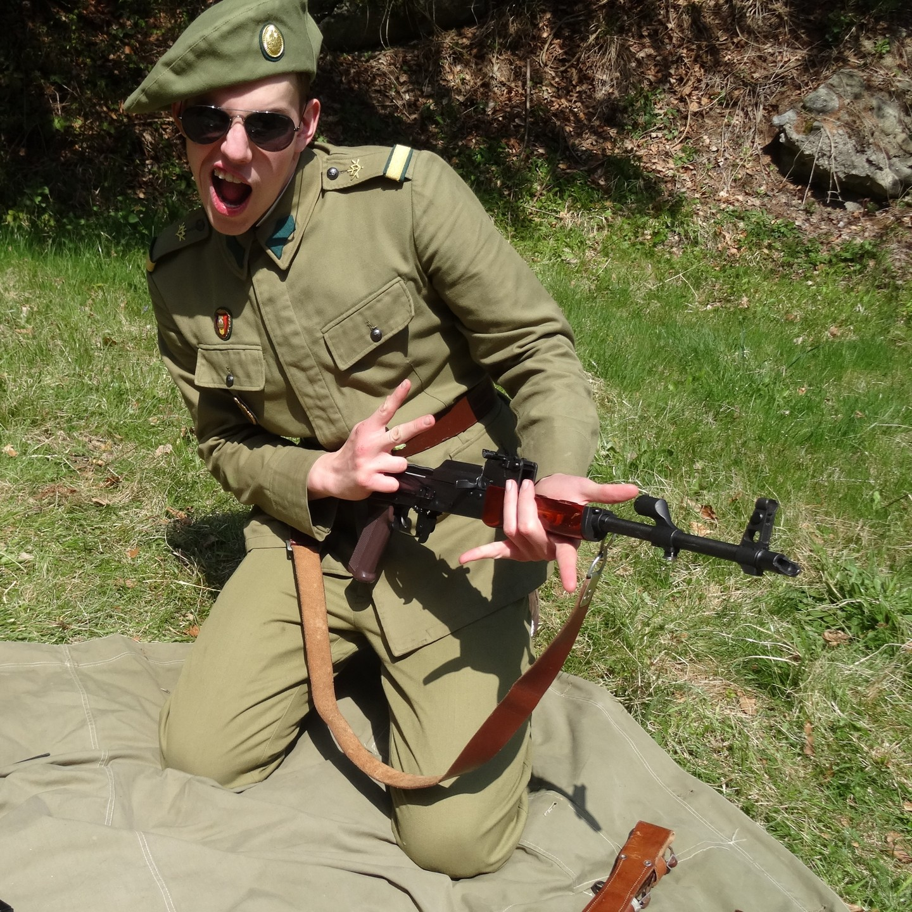

Bun venit!
Acest site este dedicat pasiunii mele pentru colecționarea uniformelor militare românești din perioada 1965-1989. Scopul acestui proiect este de a conserva o parte a istoriei și de a vă oferi informații detaliate despre uniformologia Armatei Române în perioada comunistă. Cred cu tărie că aceste piese trebuie păstrate pentru a putea oferi generațiilor viitoare o perspectivă tangibilă asupra trecutului. Prin intermediul acestui site, vă invit să explorați detaliile acestor uniforme, să descoperiți poveștile lor și să înțelegeți mai bine o epocă istorică ce merită cunoscută.
Acesta sunt eu in 2022. Acum sunt elev în clasa a XII-a la Colegiul Național „Silvania” din Zalău, județul Sălaj, iar pasiunea mea pentru colecționarea uniformelor militare a început încă din gimnaziu. Sursa pasiunii a fost dragul de istorie si